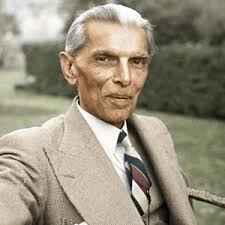

Muhammad Ali Jinnah
1876 - 1948
Founder of Pakistan
Muhammad Ali Jinnah (1876–1948) was a prominent political leader and statesman who played a pivotal role in the creation of Pakistan. As the leader of the All-India Muslim League, he advocated for the rights and interests of Muslims in British India. His unwavering efforts and negotiations led to the partition of India in 1947, resulting in the establishment of Pakistan as a separate nation for Muslims. Jinnah served as Pakistan's first Governor-General until his passing in 1948, leaving behind a legacy as the "Quaid-e-Azam" (Great Leader) and a key figure in shaping the course of South Asian history.
Biographies
- "Jinnah: India-Partition-Independence" by Jaswant Singh
- "Jinnah: Creator of Pakistan" by Hector Bolitho
- "Mr. Jinnah: Securities Unlimited" by Khurram Ali Shafique
- "Jinnah: His Successes, Failures, and Role in History" by Ahmed S. Bangash
- "The Sole Spokesman: Jinnah, the Muslim League, and the Demand for Pakistan" by Ayesha Jalal